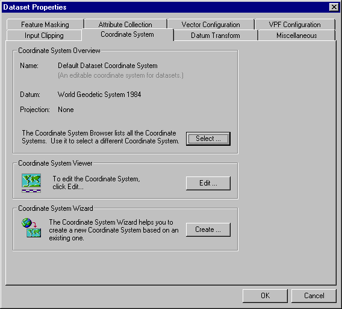

Dataset Coordinate System Information
If no input coordinate system information is entered for a dataset, then MapLink Pro Studio will assume that the data is in Lat/Long and using the WGS-84 datum.
When the dataset is not in lat/long, an input coordinate system for the dataset needs to be applied by doing the following:
- Select Dataset | Input Coordinate System
This takes you to the Dataset Properties/ Coordinate System page.
From this page you can access the following:
- The Coordinate System Browser - This enables you to view details of all the available coordinate systems and select one for the dataset.
- The Coordinate System Viewer - From here you can view/ edit details of the currently selected coordinate system for the dataset
- The Coordinate System Wizard - This enables you to create a new user defined coordinate system.
To carry out the following operations, please see the appropriate sections:
Where a datum transform is necessary, MapLink Pro Studio will automatically select an appropriate one. To override MapLink Pro Studio's choice of datum transform, do the following:
- If you have not already done so, select Dataset | Datum Transform
- De-select the 'Always use the default Datum Transform' box
- Browse through the datum transforms and make your selection
Copyright © 1998 to 2025 by Envitia Group PLC.